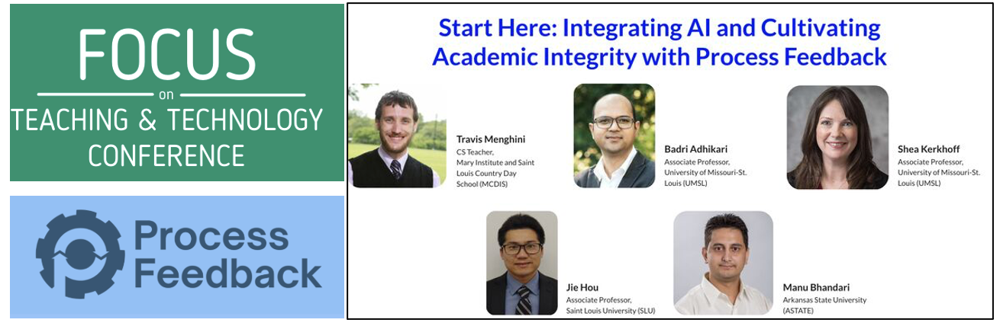

Computational Mathematics, Science & Engineering · Michigan State University
Hou Lab
AI and machine learning for biomolecular structure, omics, and health
Teaching
Dr. Hou teaches machine learning, data science, algorithms in computational biology, and introductory bioinformatics-oriented computer science, and integrates AI-driven tools such as ProcessFeedback into the classroom.
Michigan State University — courses
| Course | Title | Term |
|---|---|---|
| CMSE 830 | Foundations of Data Science Data types, cleaning and munging, and visualization, with the mathematical foundations behind them and an emphasis on linear algebra. Extends to specialized data — time series, spatial, graphical and image. Project-driven: two projects, including a capstone combining data science with machine learning, built and deployed as Streamlit web apps on GitHub. | Fall 2026 3 credits |
| CMSE 928 | Applied Machine Learning Machine learning balancing theory with practical use, working from Scikit-Learn through modern deep learning with TensorFlow, and focusing on applications in the physical and life sciences. Mixed lecture and flipped-classroom format with weekly in-class coding projects, and a semester-long capstone presented at a public poster session open to MSU researchers. | Spring 2026 3 credits |
Workshops and non-credit programs
| Program | Title | Details |
|---|---|---|
| Agentic AI | AI Models in Agentic AI: How They Learn, Fail, and Connect to Research Workflows — invited session in the AIDMM NRT Hot Topics series on Agentic AI, September 25, 2026. Session website: https://jiehou-lab.github.io/nrt_agent_week2/ | Two-hour hands-on session for graduate students and faculty across mathematics, statistics, biology, physics and chemistry; no machine-learning background assumed. Covers how language models generate output and where they fail, structured tool interfaces, the Model Context Protocol, permission rules, and scoped subagents — with four demos that progressively rebuild one tissue-analysis package. Session page |
| Urban AI | AI-Driven Decision Support for Real-World Urban Challenges — 20-hour online, non-credit learning experience (co-PI; PI: Dr. Si Chen, School of Planning, Design and Construction). Funded by the MSU AI Ready Spartans Innovation Grant, 2026. Course website: https://jiehou-lab.github.io/urban-ai/ | Open to students from all majors; no programming background required. Covers AI-driven decision-support systems, computer vision for street-view analysis, text mining of geolocated reviews, and LLMs for stakeholder engagement, with an emphasis on responsible AI use. Course page |
Saint Louis University (2019 – 2025)
| Course | Title | Semesters |
|---|---|---|
| BCB 5930 | Advanced Machine Learning for Bioinformatics | Spring 2025 |
| BCB 5300 | Algorithms in Computational Biology | Fall 2021, 2022, 2023, 2024 |
| CSCI 4750 / 5750 | Machine Learning | Spring 2020, 2023, 2024, 2025; Fall 2020, 2021, 2022, 2023, 2024 |
| CSCI 1020 | Introduction to Computer Science: Bioinformatics | Fall 2019, 2020; Spring 2020, 2021 |
AI in Education
Dr. Hou is dedicated to advancing AI in education (AI4Ed) by integrating innovative technologies such as ProcessFeedback and LLM-driven tools into computational learning, and explores approaches that enhance student engagement and promote interactive learning in both classrooms and research training. This work spans undergraduate and graduate AI research initiatives, new teaching methodologies, and contributions to major bioinformatics and CS-education conferences.
- Adhikari B, Hou J. “Teaching Coding in the Age of AI: A Hands-on Tutorial on Process Feedback.” Proceedings of the 56th ACM Technical Symposium on Computer Science Education, V.2, 2025. Full paper · Workshop materials
- FOCUS Teaching & Technology Conference: “Enhance Engagement and Learning: Integrating ProcessFeedback in Classroom” (with Travis Menghini, Badri Adhikari, Shea Kerkhoff, and Manu Bhandari).
- 2024 SSE Faculty and Staff Excellence in Teaching Award, Saint Louis University.
Acknowledgement: Dr. Badri Adhikari, founder of ProcessFeedback, University of Missouri–St. Louis.
{kind=link}
